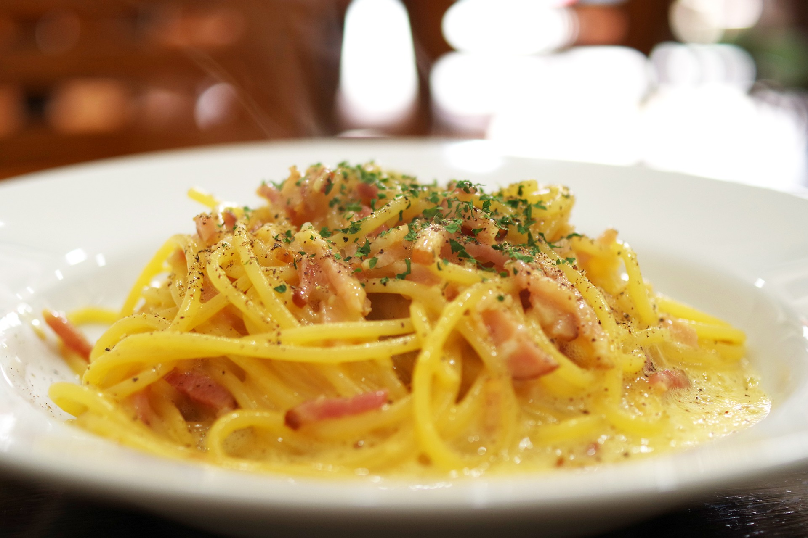

Spaghetti alla Carbonara

Introduction
The most reliable story in fact relates the encounter between the ingredients available to the American soldiers and the imagination of a Roman cook. The result was the prototype of spaghetti alla carbonara: eggs, bacon (later guanciale) and cheese. With its simplicity and the richness of ingredients, the recipe for spaghetti carbonara is closely related to three other cornerstones of genuine Italian cuisine: the Amatriciana, the Gricia and spaghetti cacio e pepe!
Ingredients
- Spaghetti 0.7 lb (320 g);
- Guanciale 5 oz (150 g);
- Egg yolks 6 - average size;
- Pecorino Romano cheese ½ cup (50 g);
- Black pepper to taste.
Preparation
- To prepare spaghetti carbonara start by putting a pot of salted water on the burner to cook the pasta. In the meantime, remove the pork rind from the Guanciale and cut it first into slices and then into strips about 1/2" (1cm) thick. The removed rind can be reused to flavor other things. Put the pieces into a non-stick pan and brown for about 15 minutes over medium heat, being careful not to burn it or it will smell too strong.
- Meanwhile, put spaghetti in boiling water and cook for the time indicated on the package. In the meantime, pour the yolks into a bowl, add most of the Pecorino cheese needed for the recipe and the remaining part will be used just before serving.
- Season with black pepper and whip by hand. Add a tablespoon of cooking water to dilute the mixture and stir.
- In the meantime the guanciale will be cooked, turn off the burner and set it aside. Drain the pasta al dente directly into the pan with the guanciale and stir it briefly to season it. Remove from heat and pour the mixture of eggs and pecorino cheese into the pan. Mix quickly to combine.
- To make it very creamy, if necessary, you can add a little cooking water to your pasta. Serve spaghetti carbonara immediately with the remaining pecorino cheese and ground black pepper on top.
Storage
We recommend eating spaghetti carbonara right away.
No type of storage is recommended.
Home